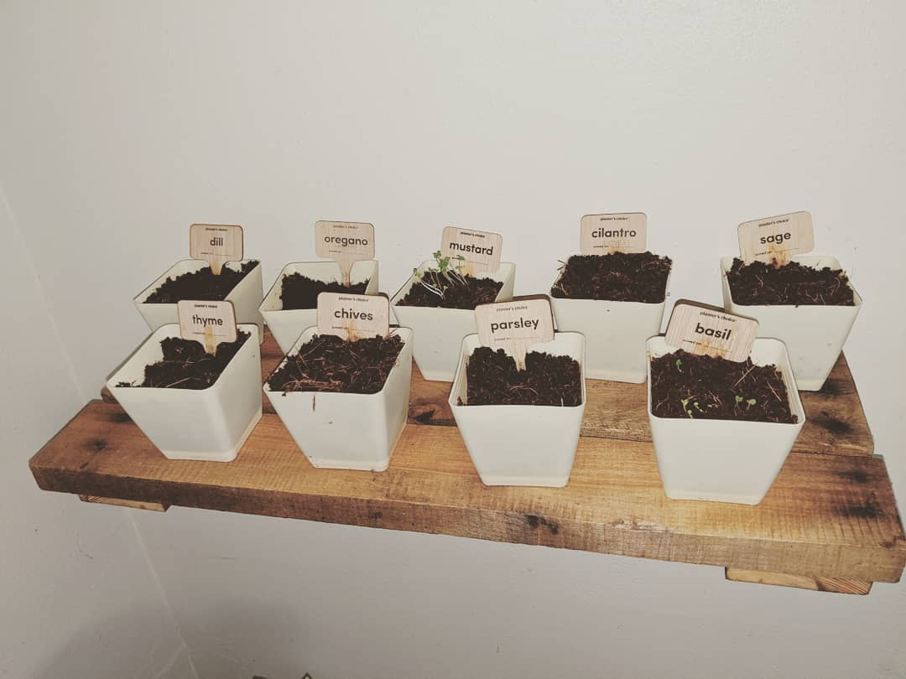

Hobbies
Crochet

Crocheting is my favorite hobby because it allows me to be creative and busy. I can create toys, clothing, blankets, etc. and it helps with my anxiety.
Gaming
Gaming is a new hobby for me. I started with Zelda Breath of the Wild of the Switch and I am currently playing the new Hogwarts Legacy game.
Garden
In the last few years I have picked up gardening and every year our garden gets larger. I like to grow my garden from seed and get my children involed with me. Along with gardening we have added chickens in the last year.
Work Experience
Emergency Department Unit Secretary
Crocheting is my favorite hobby because it allows me to be creative and busy. I can create toys, clothing, blankets, etc. and it helps with my anxiety.
Senior Customer Service Associate
Gaming is a new hobby for me. I started with Zelda Breath of the Wild of the Switch and I am currently playing the new Hogwarts Legacy game.
Customer Service Representative
In the last 3 years I have picked up gardening and every year our garden gets larger. I like to grow my garden from seed and get my children involed with me. Along with gardening we have added chickens in the last year.